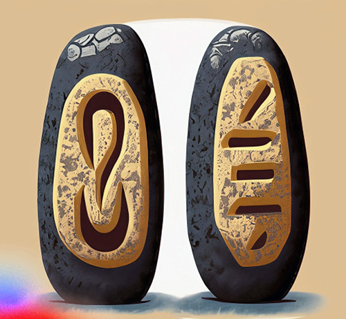
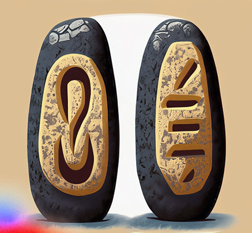
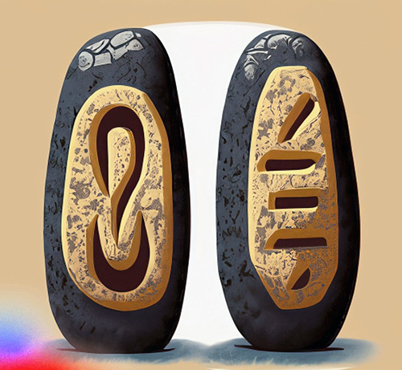

Shweta K. Sisodiya
Computational Media Phd Student

 

The Alchemist
Status : On-going
Team : Shweta K. Sisodiya, Yi Xie and Angle Tan
Principal Investigator: Elin Carstensdottir
The primary aim of this research is to enhance the academic understanding and practical application of narrative-driven games. It seeks to explore the deep interconnection between story progression mechanics, and player experience. This knowledge can guide the design of more engaging, meaningful, and immersive interactive storytelling experiences.
This research intends to:
- Examine how different progression mechanics, such as 'Progression through Choice Selection' and 'Progression through Choice Selection' impact player engagement.
- Analyze the effect of these progression mechanics on interaction patterns within narrative-driven games.
- Understand how progression mechanics influence players' perception and interpretation of the narrative plot.
To achieve the above objectives, the study will employ a mixed-methods approach that includes:
- Visual analytics to quantify and analyze player interaction patterns.
- Player experience research to qualitatively understand the effects of progression mechanics.
- Development of visualization tools to illustrate the findings and support game design decisions.
Lets get in touch !
UCSC Silicon Valley Extension
3175 Bowers Ave
Santa Clara
CA 95054
Email: sksisodi@ucsc.com